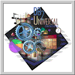

- software -
|  |
WEB LINKS DIMENET Network - Informational web pages for the Dimenet Network and participating sites. . TNET Services is primarily a software development firm. It's primary focus is the support of an organization called Dimenet, which is a group of Independent Living Centers that provide services and support for people with disabilities so that they can live on their own with access and dignity. Originally established in 1984 and connected to the Internet since 1995, TNET has been developing software and related hardware systems for more than 18 years. |
|
SDT is committed to supporting organizations throughout the world with improving their software quality and testing efforts. . Software Development Technologies (SDT) You are launching new software projects and want to invigorate your test automation efforts. With this in mind, we offer ways to leapfrog those nagging automation problems through both online and onsite services. Gain new ground with SDT's 3-Day Test Automation Critique. |
|
. Established in 1985, Genesis began with our current president offering his skills to a small number of companies. Genesis Software has now grown to several development teams working with the latest technologies helping companies achieve their information systems goals. Genesis Software offers a range of services that allow you to acquire IT skills when required. Our services range from project analysis, systems design and development, implementation, delivery and quality assurance. |
|
With CASH PREPAY, you can set credit limits for telephone charges. .you should consider using our CASH Call Reporting Software for easy and affordable access to this valuable information. CASH Call Accounting Software CASH is a powerful telecommunications software that allows you to report on incoming, outgoing, local, long distance and international calls using banding tables. Export features are available for many software packages in the business, professional and service industries to enable immediate billing. |
further information: http://www.vasoftware.com